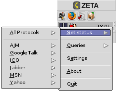
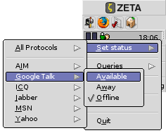
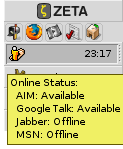

The Instant Messenger Kit
Setting Your Status
Anyone using ZETA that has made a People file about you with the your nickname on the supported protocols as attributes, or friends using other platforms that has added you to their buddy lists, can see when you are logged in and what status you have set. Setting your status as Available, is an invitation for others to start a chat with you.
The im_server lets you can set your online status for all protocols at once using it's replicant in the Deskbar menu, but you can also choose which protocol you want to be available with:

Currently only three different status modes are supported: Available (Online), Away and Offline. The kit lets you set a different status for each protocol if needed:

You can easily check your online status by by moving the mouse over the deskbar replicant. A label will then appear on the screen showing the status of each installed protocol:

Our tip is that you switch your status from Available (green) to Away (yellow) when you need to get some work done. This way you are able to get the work done without being disturbed with unnecessary messages, but still being able to send messages related to your work.